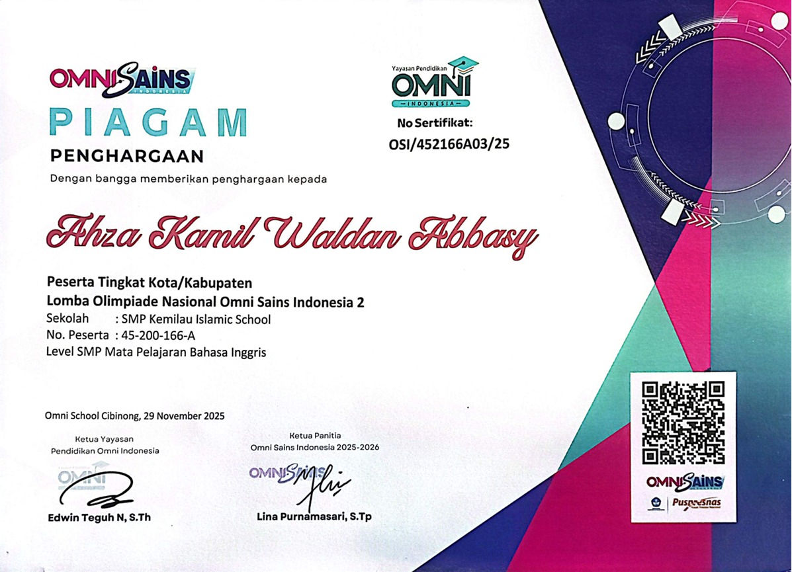
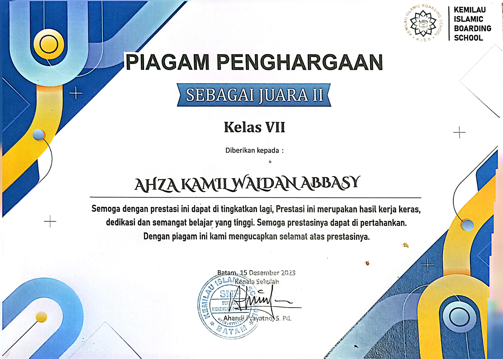
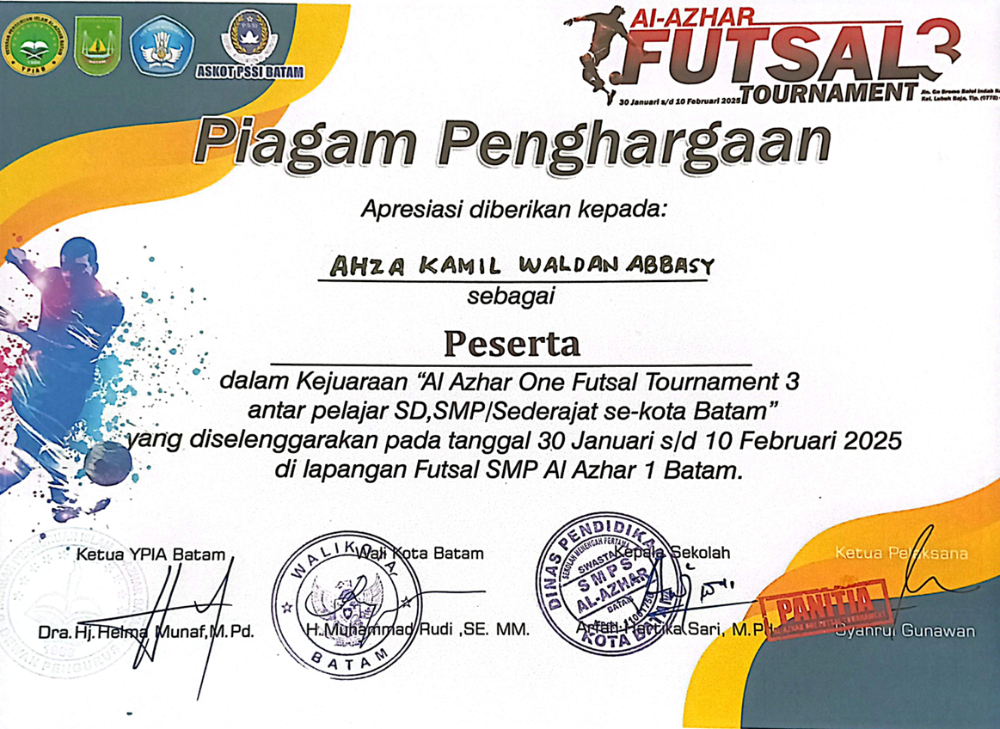
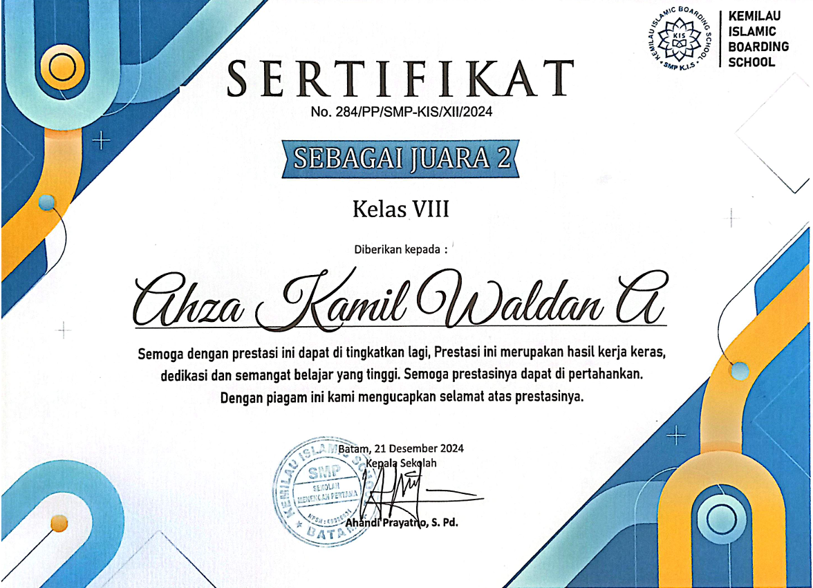
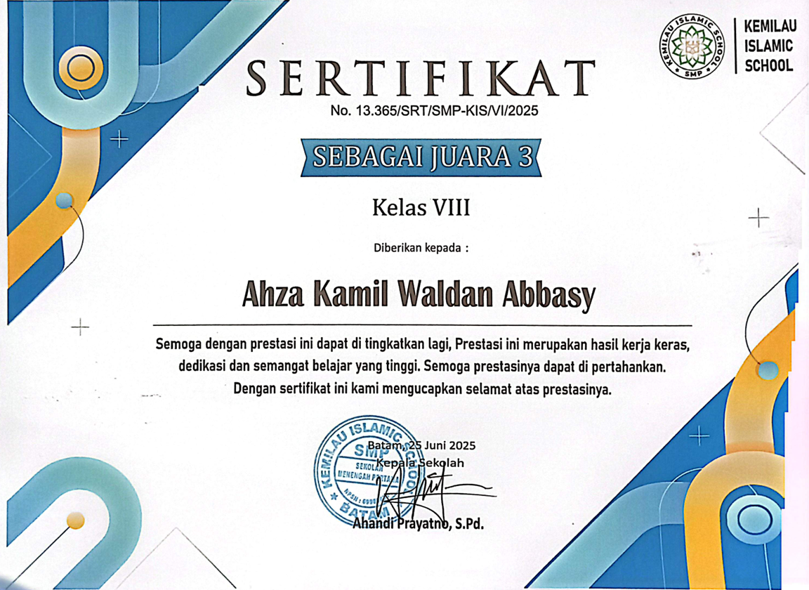
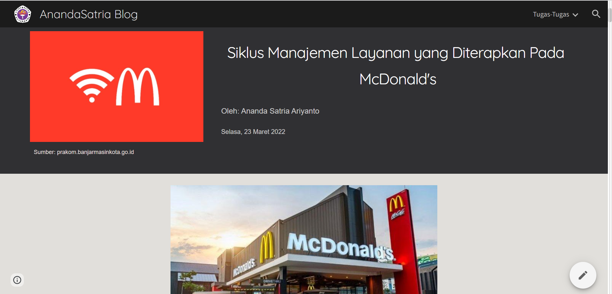
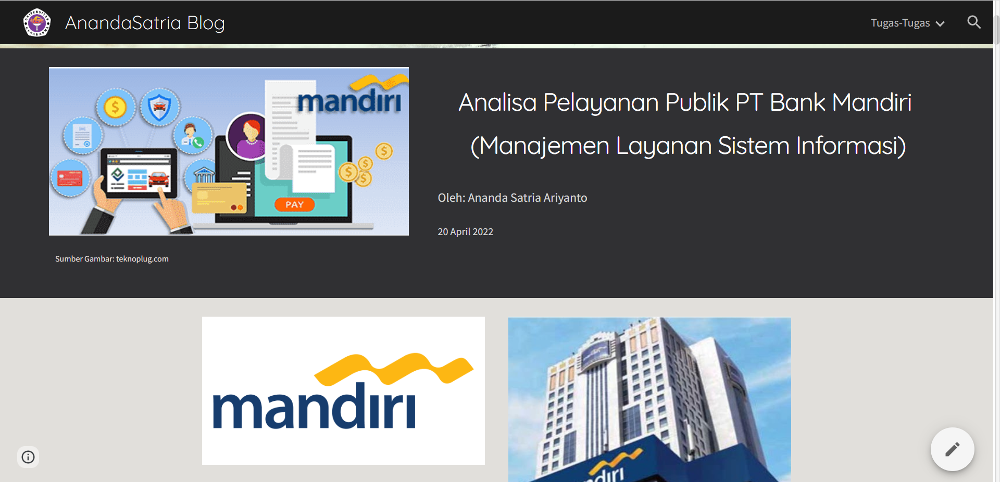
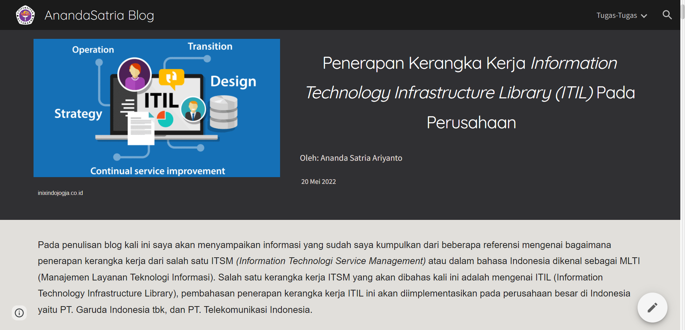

halo semua 🙌 saya,
Ahza kamil waldan abbasy
student of Idn boarding school solo
portofolio ini menampilkan proyek dan kontribusi saya sebagai pengambang di bidang teknologi
halo semua 🙌 saya,
student of Idn boarding school solo
portofolio ini menampilkan proyek dan kontribusi saya sebagai pengambang di bidang teknologi

Halo, saya Ahza kamil waldan abbasy Seorang Full-Stack Developer muda lulusan SMK yang bersemangat menjembatani estetika front-end dan fungsionalitas back-end. Menggunakan teknologi seperti React dan Laravel, saya senang mengubah baris kode menjadi aplikasi web yang interaktif, cepat, dan mudah digunakan. Mari menjelajahi proyek-proyek terbaik saya di bawah ini!
"Setiap proyek di bawah ini mencerminkan perjalanan saya dalam menguasai ekosistem Full-Stack. Mulai dari merancang arsitektur database yang efisien di Laravel, hingga menciptakan pengalaman pengguna (UX) yang mulus dengan React. Saya selalu fokus pada penulisan kode yang bersih (clean code) dan performa aplikasi yang optimal."
"Di bawah ini, Anda akan menemukan rangkaian proyek yang merepresentasikan keahlian saya. Mulai dari pembangunan arsitektur database dan RESTful API yang kokoh menggunakan Laravel, hingga implementasi antarmuka komponen yang dinamis dengan React. Setiap karya dirancang dengan fokus pada efisiensi kode, keamanan sistem, serta kenyamanan pengguna akhir."
"Setiap proyek yang saya bangun bukan sekadar baris kode, melainkan solusi digital untuk memecahkan masalah nyata. Di bawah ini, Anda dapat melihat bagaimana saya mengombinasikan keunggulan Laravel dalam mengolah data yang aman dengan fleksibilitas React untuk menciptakan visual yang adaptif di berbagai perangkat. Selamat menjelajahi hasil karya terbaik saya!"


berikut inilah sertfikat yang saya pernah saya dapatkan






Pernah dan sedang belajar pada program dan universitas berikut
berikut ini adalah blog yang pernah saya tulis di goggle site

Dalam penulisan artikel kali ini penulis akan membahas mengenai Layanan Sistem Informasi yang diterapkan pada perusahaan makanan cepat saji McDonald's. Sebelumnya penulis dan beberapa anggota kelompok telah melakukan analisis layanan sistem informasi pada sebuah restaurant McDonald's, dari hasil analisis tersebut dibagi menjadi 5 Tahap Siklus Manajemen Layanan TI, 5 siklus tersebut berupa Service Strategy, Service Design, Service Transition, Service Operation, dan Continual Service Improvement. Kelima siklus tersebut juga merupakan bagian dari Information Technology Infrastructure Library (ITIL) atau yang dimaksud sebuah konsep Teknologi Informasi

Manajemen Layanan Sistem Informasi itu sendiri merupakan sebuah metode pengolahan sistem Teknologi Informasi (TI) yang terpusat pada konsumen terhadap bisnis perusahaan. Sedangkan Pelayanan Publik merupakan kegiatan pemenuhan kebutuhan pelayanan sesuai peraturan perundangan bagi setiap penduduk atas barang, jasa atau pelayanan administratif yang disediakan oleh publik atau pemerintah. Dalam hal ini Manajemen Layanan Informasi merupakan salah satu strategi perusahaan perbankan untuk meningkatkan pelayanannya terhadap konsumen, sementara sistem informasi yang digunakan menyangkut hal-hal seperti data dan informasi.

Pada penulisan blog kali ini saya akan menyampaikan informasi yang sudah saya kumpulkan dari beberapa referensi mengenai bagaimana penerapan kerangka kerja dari salah satu ITSM (Information Technologi Service Management) atau dalam bahasa Indonesia dikenal sebagai MLTI (Manajemen Layanan Teknologi Informasi). Salah satu kerangka kerja ITSM yang akan dibahas kali ini adalah mengenai ITIL (Information Technology Infrastructure Library), pembahasan penerapan kerangka kerja ITIL ini akan diimplementasikan pada perusahaan besar di Indonesia yaitu PT. Garuda Indonesia tbk, dan PT. Telekomunikasi Indonesia.